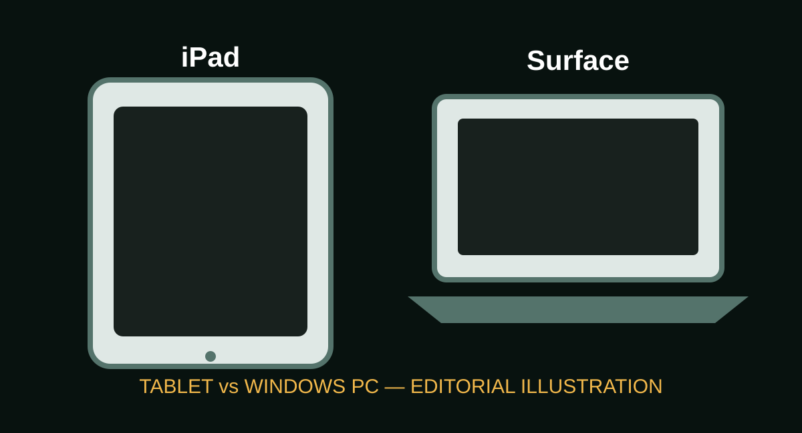
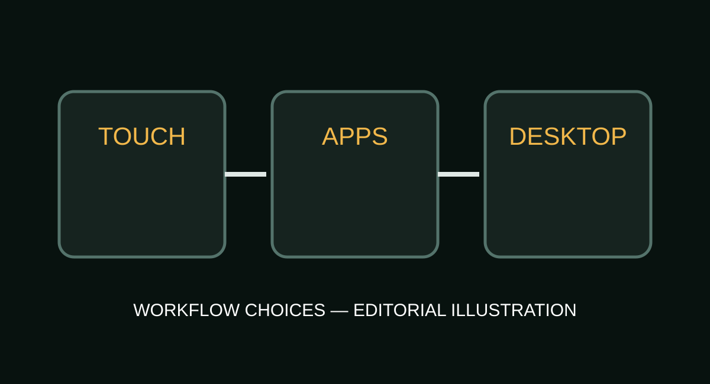

iPad vs Microsoft Surface: Two Approaches to Modern Personal Computing
Apple's iPad and Microsoft's Surface families overlap, but they start from different ideas about tablets, laptops and software.

Two different starting points
iPad begins with a tablet-first model built around touch, apps and Apple's mobile operating system. Surface Pro begins from a Windows PC architecture that can transform between tablet and laptop-like use. Surface Laptop, meanwhile, is a conventional notebook with Microsoft's Windows ecosystem.
Hardware and display
Apple's current iPad family includes iPad, iPad mini, iPad Air and iPad Pro. Microsoft offers several Surface Pro and Surface Laptop configurations. The hardware differences matter: iPad Pro emphasizes a high-end tablet display and Apple silicon, while Surface Pro emphasizes Windows compatibility, detachable keyboard use and PC-style software.

Software is the biggest difference
For many users, the most important choice is not the processor but the operating system. iPadOS is designed around touch and tablet applications. Windows on Surface supports a much broader traditional desktop software environment. That can matter for programming tools, specialist applications, file workflows and legacy Windows software.
Pen, keyboard and creativity
Both ecosystems support pen input and keyboard accessories. iPad supports Apple Pencil models and Magic Keyboard options. Surface Pro supports Surface Pen and keyboard accessories. For handwriting, illustration and media work, both can be strong; the preferred workflow depends heavily on the applications used.
Current U.S. starting prices
| Family | Starting price | Typical positioning |
|---|---|---|
| iPad | $349 | Everyday tablet |
| iPad Air | $599 | Higher-performance tablet |
| iPad Pro | $999 | High-end professional tablet |
| Surface Pro 13-inch (12th Edition) | $1,499.99 | Windows 2-in-1 PC |
| Surface Laptop 13.8-inch (8th Edition) | $1,599.99 | Windows laptop |
Prices are U.S. starting prices shown by Apple and Microsoft and can vary by configuration, promotion, taxes and region.
Which type fits which workflow?
A student who prioritizes handwriting, tablet portability and a large app ecosystem may focus on iPad. Someone who needs desktop Windows applications, PC-style multitasking or a traditional development environment may focus on Surface. Neither category is universally superior; the operating system and workflow should drive the decision.